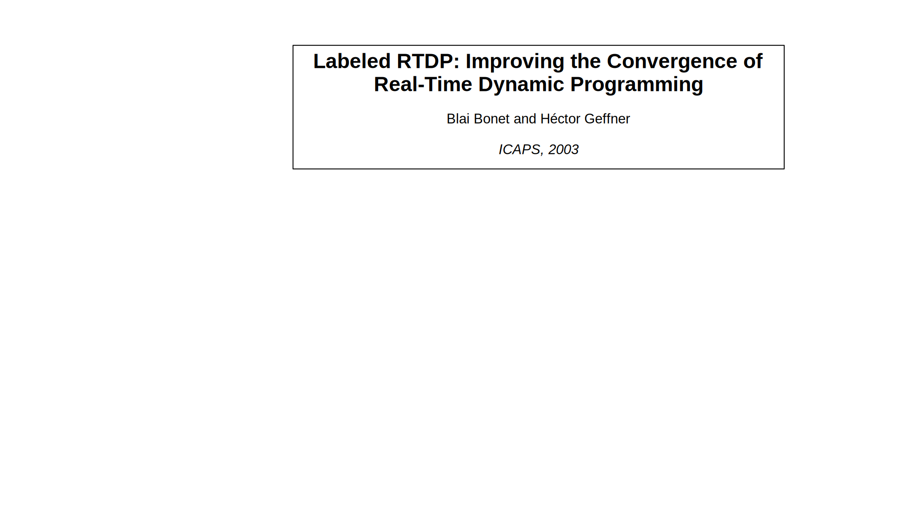
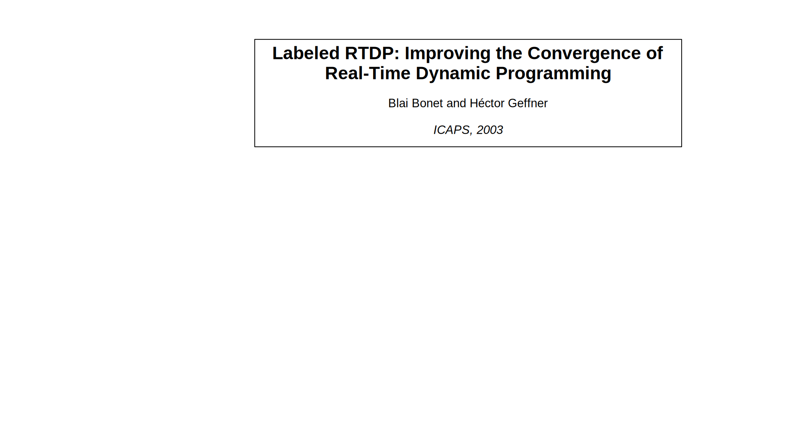
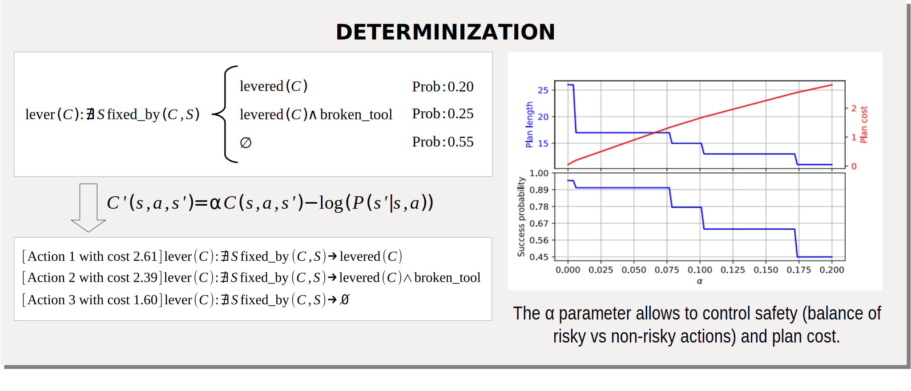
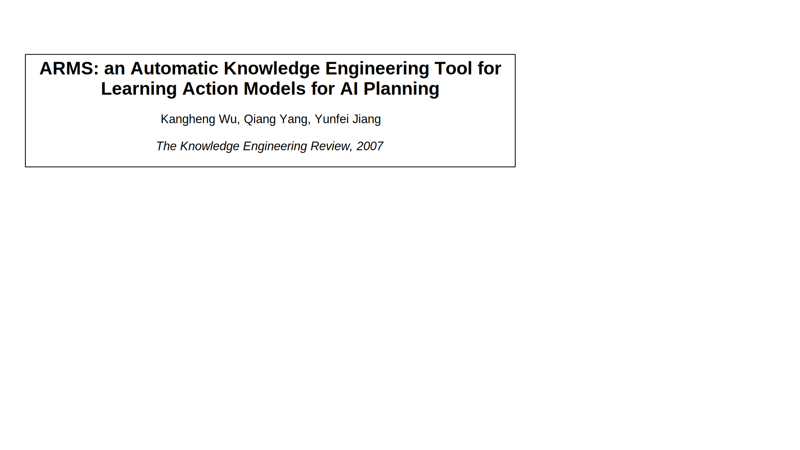
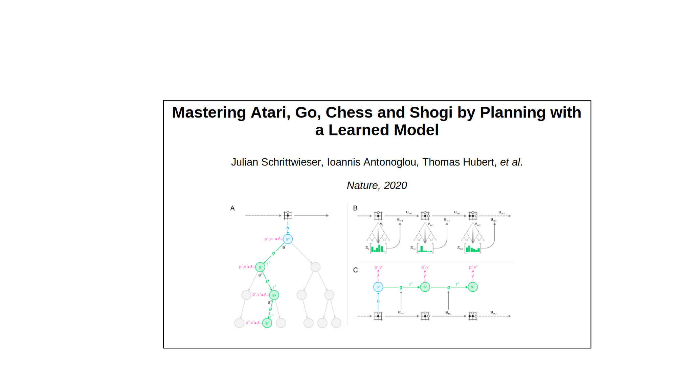
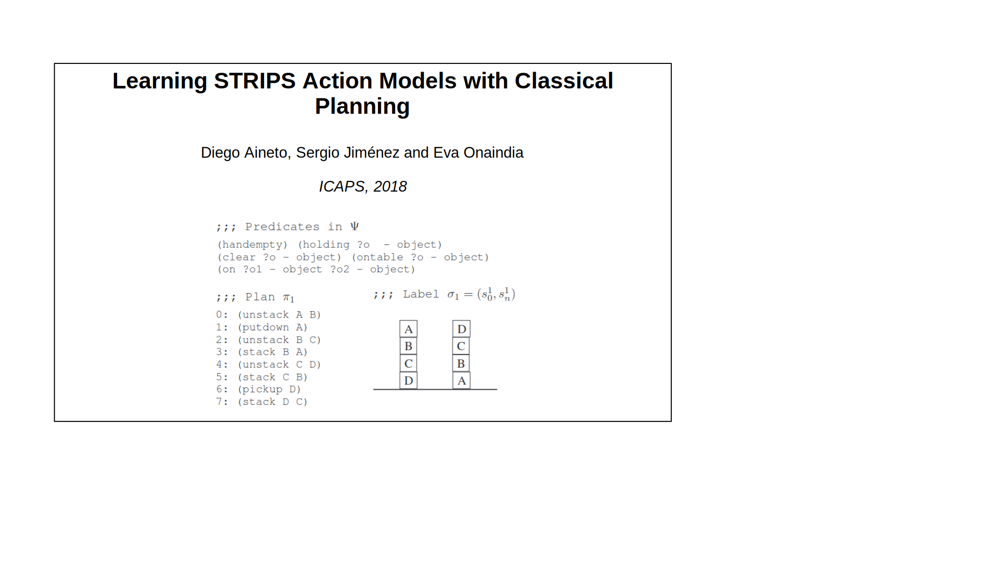
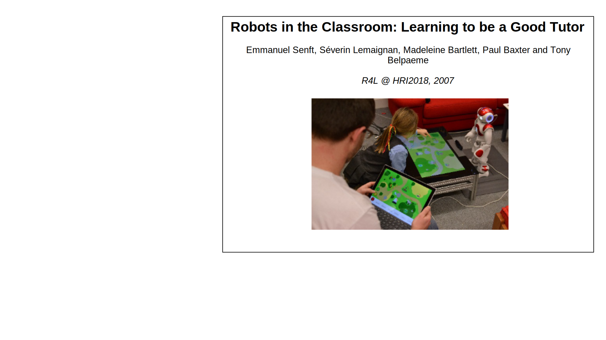
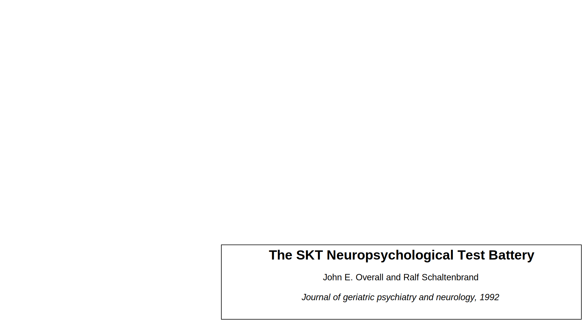
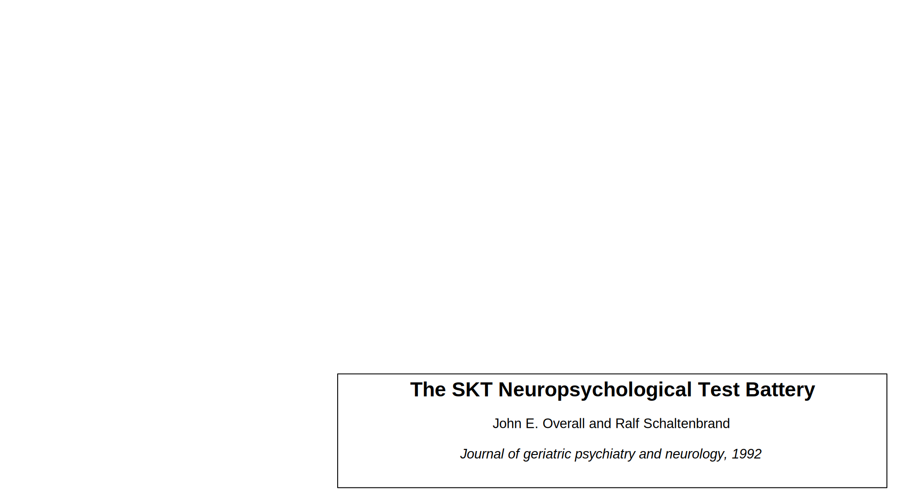
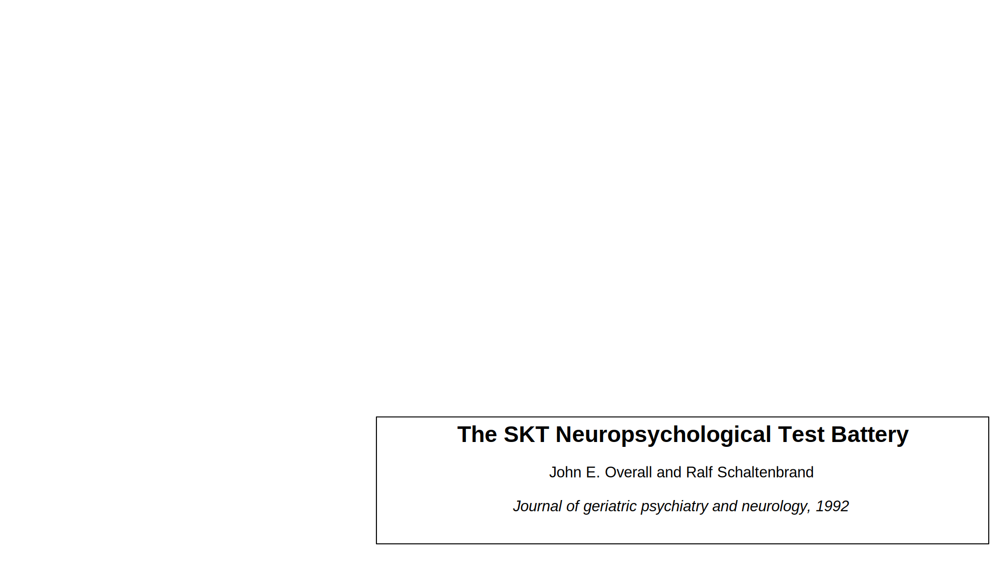

Ph.D. Dissertation
New Methods for Bridging Symbolic-Geometric Reasoning, Addressing Uncertainty and Action Learning in Task Planning for Robotics
Advisors:
July 25th, 2024
Motivation


Objectives


Contributions

Planning and Execution

Dual-arm Symbolic-motion Planning


A. Suárez-Hernández, G. Alenyà, and C. Torras. "Interleaving hierarchical task planning and motion constraint testing for
dual-arm manipulation." In IEEE/RSJ IROS 2018, pp. 4061–4066.
Addressed problems
- Symbolic-geometric reasoning (O1)
- Partial observability (O3)
Literature


Specific contributions
- Encode dual-arm alternatives in HTNs (O1)

Specific contributions
Specific contributions
- Encode dual-arm alternatives in HTNs (O1)
- Quantify uncertainty (O3) and preparatory actions
Specific contributions

Quantitative experiments


Qualitative experiment
Planning in Face of Stochastic Outcomes


A. Suárez-Hernández, C. Torras, and G. Alenyà.
"Practical resolution methods for MDPs in robotics exemplified
with disassembly planning." In IEEE RA-L (2019), pp. 2282–2288.
Addressed problems
- Handle uncertain outcomes (O2)
- Handle partial observability (occlusions) (O3)


Literature
 



Specific contributions
Specific contributions
Specific contributions

Results
Leveraging Simulators to Minimize Risk


A. Suárez-Hernández, T. Gaugry, J. Segovia-Aguas,
A. Bernardin, C. Torras, M. Marchal, and G. Alenyà.
"Leveraging Multiple Environments for Learning and Decision Making:
a Dismantling Use Case.” In: IEEE/RSJ IROS 2020, pp. 6902–6908.
Problems addressed
- Unknown frequency of outcomes (O2)
- Distinguish among actions? (O1)


Literature

Specific contributions


Model resolution
Algorithm visualization (test+target)
Results


Results
Results
Results
Results
Learning Planning Operators

STRIPS Action Discovery


A. Suárez-Hernández, J. Segovia-Aguas, C. Torras, and
G. Alenyà. “STRIPS action discovery.” In: arXiv preprint arXiv:
2001.11457 (2020). Presented in the 1st Workshop on Generalization in
Planning at the 2020 AAAI conference.
Addressed problems
- Learning STRIPS state traces (O4)
- Minimal information

Literature



FAMA/DAM compilation
Learn action models for a given configuration (known #actions, #parameters per action)

Specific contributions
Results

INtuitive PROgramming

A. Andriella, A. Suárez-Hernández, J. Segovia-Aguas,
C. Torras, and G, Alenya. "Natural teaching of robot-assisted
rearranging exercises for cognitive training." In ICSR 2019, pp. 611–621
A. Suárez-Hernández, A. Andriella, A. Taranović,
J. Segovia-Aguas, C. Torras, and G. Alenyà. "Automatic
learning of cognitive exercises for socially assistive robotics."
In RO-MAN 2021, pp. 139–146
Addressed problems
- How can non-expert users extend robot's behavior (O4)?
Literature

 


Specific contributions
- INtuitive PROgramming (INPRO): practical application of action model learning algorithm (INPRO)
- Feedback strategies to inform teacher

Hypotheses
- H1: teachers from the minimum feedback group will require more traces to complete the exercises
- H2: more teachers in the full feedback group will teach all exercise rules
Results


Online Action Recognition through Unification


A. Suárez-Hernández, J. Segovia-Aguas, C. Torras, and
G. Alenyà. "Online Action Recognition." In: AAAI 2021 Conference,
pp. 11981–11989
Addressed problems
- Real-time STRIPS action learning
- Learning even with Partial Observability
- Few-shot performance
Specific contributions
- New algorithm for merging actions (AU)
- Online Action through Unification (OARU)

Results (full observability)

Results (partial observability)
INtuitive PROgramming 2


A. Suárez-Hernández, A. Andriella, C. Torras,
and G. Alenyà. "User Interactions and Negative Examples
to Improve the Learning of Semantic Rules in a Cognitive
Exercise Scenario." In IROS 2023, pp. 7953–7960.
Addressed problems
- Learn more complex exercises
- Until now: robot hasn't been very proactive
- Learn goals?
Specific contributions
- Adopt OARU in SAR scenario
- Improve OARU with negative examples
- Learn goals
- Proactive questioning
Execution example


Prompting criterion


Quantitative results
Qualitative results
Conclusions
New Methods for Bridging Symbolic-Geometric Reasoning, Addressing Uncertainty and Action Learning in Task Planning for Robotics
Conclusions
Bridging Symbolic-Geometric Reasoning
Addressing Uncertainty
Action Learning
Key advances:
- Simplification $ \rightarrow $
- Beyond-symbolic reasoning $ \rightarrow $
- Hands-off learning $ \rightarrow $
Conclusions
Bridging Symbolic-Geometric Reasoning
Addressing Uncertainty
Action Learning
Key advances:
-
Simplification $ \rightarrow $
- Hierarchical representations
- Determinization
- Beyond-symbolic reasoning $ \rightarrow $
- Hands-off learning $ \rightarrow $
Conclusions
Bridging Symbolic-Geometric Reasoning
Addressing Uncertainty
Action Learning
Key advances:
- Simplification $ \rightarrow $
-
Beyond-symbolic reasoning $ \rightarrow $
- Uncertainty checks and collision logic in HTNs
- Leveraging simulators
- Hands-off learning $ \rightarrow $
Conclusions
Bridging Symbolic-Geometric Reasoning
Addressing Uncertainty
Action Learning
Key advances:
- Simplification $ \rightarrow $
- Beyond-symbolic reasoning $ \rightarrow $
-
Hands-off learning $ \rightarrow $
- Learning without action signatures
- Practical implementation in SAR
Future Work
- Simplification
- Further strategies to decompose tasks
- New determinization algorithms
- Beyond symbolic reasoning
- Leverage more than two environments
- Compare interleaved simulation/real execution against transfer learning
- Hands-off learning
- Improve prompting strategies (INPRO 2)
- Combine OARU/INPRO2 with learned embeddings
New Methods for Bridging Symbolic-Geometric Reasoning, Addressing Uncertainty and Action Learning in Task Planning for Robotics